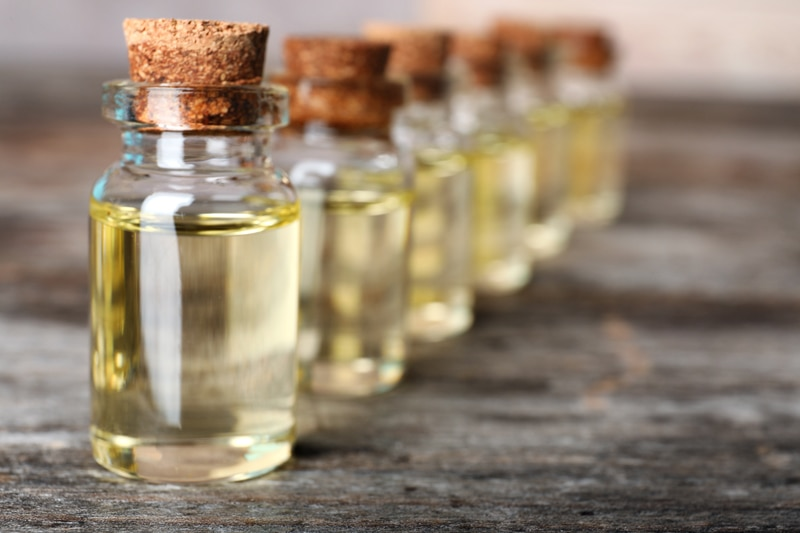
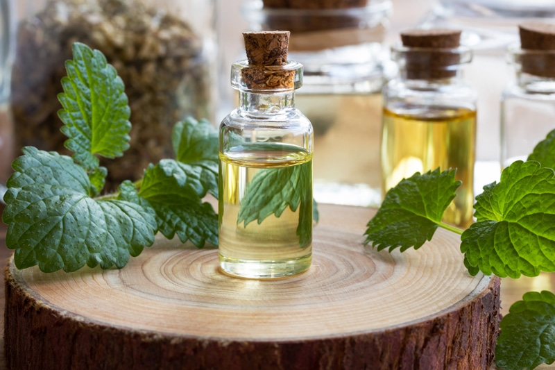

Using Essential Oils (instead of whole ingredient)
For this post, I am thrilled to share about preparing dishes with essential oils, a world where each drop is filled with nutritionally potent, bright, and vibrant taste. Essential oils are the highly concentrated, volatile, aromatic essences of plants. One thing that you need to be cautious about is that you only want to use organic culinary grade oils for internal purposes. Be sure to read labels with care, plant medicine is potent, and not all of the essential oils are meant to be taken internally.

The absolute purity of flavor in a concentrated form
If you are interested in using essential oils in recipes, it is important to note that not all essential oils are created equally. Most essential oils that are inexpensive and readily found in stores are not organic, or, if they are, they have fillers in them which is why they are at that less-expensive price point. Many are not steam distilled or expeller produced. Many oils are expelled using hexane, a chemical which is toxic. So if this subject interests you, you will need to do some leg work and research the brand(s) you want to use. Personally, I use Young Living oil and have been very pleased.
One drop, two drops, three drops… whoooooa!
A best practice to keep in mind is that essential oils are powerful, it only takes one or two drops. If you plan on using them in cooked dishes, it is important to know that due to their chemical compounds, it is best to use the oils toward the end of the cooking process as heat does change the therapeutic qualities.
Are you confused about how to use essential oils in recipes? If you are, it’s ok; I was too in the beginning. Learning to cherish and USE my spice drawer was a HUGE change-of-life-event for me. And just when I got comfortable with them, I decided to dive into the trough of using essential oils in recipes. These oils don’t necessarily need to replace fresh ingredients, but it’s nice to mix things up. So, let’s go over a few basics.
The Benefits of Culinary Essential Oils
Helps Control Bacteria and Preserves Shelf Life
- Essential oils such as Garlic, Thyme, Rosemary, Oregano, and Basil are effective in controlling bacterial growth in food products (1).
- Oils like Lavender and Lime are known to control fungal infections in food. Therefore, the quality of lipid-containing foods (fatty foods) can be extended and preserved by adding these oils that have strong antioxidant properties.
A Few Health Benefits
- Cinnamon helps balance blood sugar levels.
- Peppermint, Lavender, and Lemon help reduce symptoms associated with irritable bowel syndrome.
- Citrus oils promote healthy digestion, uplift the mood, and support a healthy immune system.
- Cinnamon is an antioxidant, antimicrobial, and anti-inflammatory. It can also add a warm and spicy layer to your favorite meal, coffee, or hot chocolate.
- Ginger is an excellent carminative that helps promote stomach acid production and keeps the GI tract healthy and moving. It is also a potent anti-inflammatory that provides antioxidant benefits as well.
They Last Longer
- Essential oils last much longer than herbs and spices.
- Fresh herbs and spices last a few days at best before needing to be thrown out while the dried varieties usually have a shelf life of six months.
- When essential oils are stored in a cool, dry place out of direct sunlight, they will last indefinitely.
You Save Money
- As I said above, fresh herbs and spices have a short shelf life and often go to waste before we can use them. Essential oils never really expire if taken care of properly. A fifteen dollar bottle of essential oil can last you a year or more. How much money have you tossed in the trash from purchasing and not using fresh herbs?

Before You Start Using Culinary Grade Essential Oils
Before using essential oils, it’s important to educate yourself! NEVER give essential oils to babies, toddlers, or animals for internal use without proper guidance. Always consult with a medical professional, if you have health issues and especially if you are pregnant or breastfeeding.
Very Concentrated!
- Essential oils are VERY concentrated, and therefore should be used in small amounts and never ingested undiluted or directly from the bottle.
- If you plan on using essential oils in your recipes, you need to think about what it does to a dish or beverage when you remove the bulk or color of a spice or herb. For the most part, it’s no biggy, but you don’t want to replace all the fresh Basil in pesto with a few drops of essential oil. The fresh Basil is not only the primary provider of color, but it is a large portion of the recipe.
- Start with ONE drop.
- I have learned over the years NEVER to hold the essential oil bottle over the other ingredients and let the drops fall into the bowl. One too many drops can easily ruin a recipe.
- Essential oils can draw toxins from plastic bowls and cling to metal; use glass or ceramic instead.
- If you cook some of your food, add the essential oil(s) towards the end of cooking so that the heat doesn’t damage the integrity of the oils.
Dilute Culinary Essential Oils as Needed
- Essential oils should be diluted into a lipid(fat) first. When diluted, the oil will get dispersed throughout the whole dish, and we don’t end up with a concentrated bite of essential oil which could be detrimental to the body.
- For savory recipes, dilute into a bit of olive or coconut oil. Stir, then add to the recipe.
- For sweet recipes, try adding the drop to maple syrup or other viscous liquids.
Salad Dressings Ideas
- For salad dressings, add one drop of essential oil to an ounce of olive oil (or your preference) and drizzle over a salad. Citrus essential oils like Lemon, Tangerine, Yuzu, Grapefruit, and Bergamot are excellent on salads. These herbs pair well with Ginger, Spearmint, Basil, Sweet Marjoram, and Lavender.
Beverages Ideas
- Add a drop of Lemon oil to your water or tea.
- To add Cinnamon essential oil to your drink, dip a toothpick into the oil then stir the liquid. Cinnamon is considered a “hot oil” and can be too powerful for the body.
- Add a drop of citrus essential oils to smoothies.
Recipe Ideas
- Making a raw marinara sauce or an herbed dip? Add a few drops of Basil or Rosemary oil and watch it transform your dish into something extraordinary.
- With a large pot of soup, herbs like Basil, Marjoram, Cilantro, Dill, and Rosemary can be replaced with oils. Remember, they are very concentrated sources of their herb counterparts, so you are not going to need very much. For an extra large pot of soup, one drop may be all that you need. Seriously!
- When making guacamole, you can use Black Pepper, Coriander, and Lime essential oils.
- Enhance a bowl of oatmeal by adding one drop of Cinnamon and Orange essential oil.
General Spice/Herb Substitutions Ideas
- For spicy dishes, Cardamom, Coriander seed, Black Pepper, Ginger, Nutmeg, Turmeric, Cinnamon, and Sweet Orange is great to add.
- Substitute Lemon oil for Lemon zest, Orange oil for Orange zest, and Lime oil for Lime zest.
- For bolder tasting herb oils such as Thyme, Oregano, Rosemary, and Marjoram, dip a toothpick into the bottle and stir into your recipe just before serving.
- A good rule of thumb is to use one drop of oil for one to two teaspoons of dried spice or one to two tablespoons of fresh spice.
Disclaimer
This website is not intended to provide medical advice. All content, including text, graphics, images, and information available on this site is for general informational, entertainment, and educational purposes only. The content is not intended to be a substitute for professional diagnosis or treatment. The author of this site is not responsible for any adverse effects that may occur from the application of the information on this site. You are encouraged to make your own healthcare decisions, based on your research and in partnership with a qualified healthcare professional.
© AmieSue.com